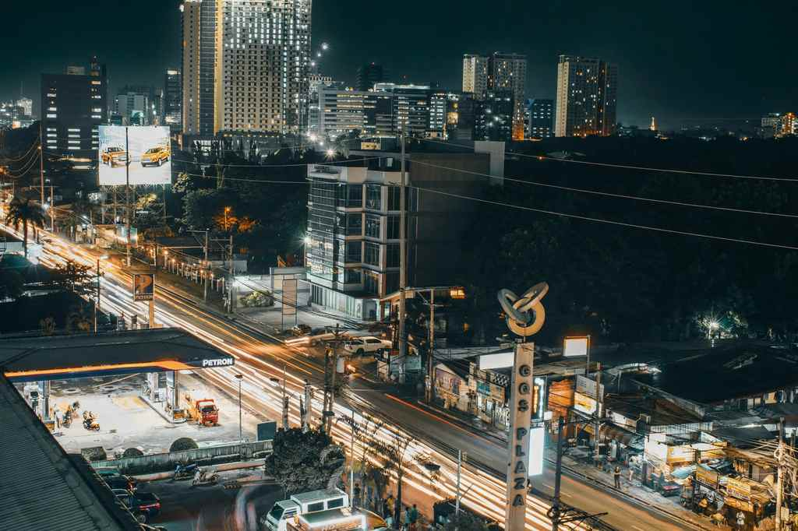

Christmas in Cebu begins well before December. Mall trees are lit by October, the old downtown markets start filling with ham, queso de bola and parol lanterns in November, and from 15 December the churches fill twice a day for Simbang Gabi and Misa de Gallo. For anyone visiting Cebu City over the holidays, those three things are what to plan around: the lights, the Masses and the night markets.
This guide covers where the Christmas lights go up in 2026, which churches to pick for the nine-day novena of Masses and when they usually start, and how to shop Carbon and the Colon night market without losing your patience or your phone. There's also a simple three-evening plan at the end.
Exact dates and Mass times are confirmed by the city, the malls and each parish closer to December, so treat the times below as a guide and check the official pages a few days ahead.

Christmas in Cebu at a glance
Where to see the Christmas lights
Cebu's holiday lights are split between the old civic centre and the malls. The civic displays go up later but feel more like a city celebration. The malls start earlier and are easier on rainy nights.
- Fuente Osmeña CircleThe city's own season usually opens here in early December, with a large tree, choir performances and a short fireworks show. Go after 7 p.m. for the full effect.
- Cebu Provincial CapitolThe Capitol facade at the top of Osmeña Boulevard lights up around the same time, so you get two photo spots on one walk from Fuente.
- Plaza SugboBeside City Hall downtown, this square usually has its own tree. In the last two years the display leaned toward native materials and a resilience theme.
- SM Seaside City CebuThe Mountain Wing Atrium has a Victorian-style Christmas train display this year, launched on 16 October, with Santa meet-and-greets and a holiday bazaar.
- Ayala Center CebuThe Terraces runs an evening light show through December, usually between 6 and 9 p.m. It's an easy add-on to dinner in the Business Park.
- NUSTAR and the SRPNUSTAR usually lights its atrium tree in late October and adds light installations along its boardwalk. Pair it with the Cebu BRT, which ends at Il Corso next door.
Traffic around Fuente, Jones Avenue and Osmeña Boulevard gets heavy on December evenings. If you want photos without the crowds, go on a weekday and aim for the early blue hour, just after sunset.
Simbang Gabi and Misa de Gallo churches
The nine-day novena of Masses before Christmas comes in two forms in Cebu. Simbang Gabi is the evening Mass, held from 15 to 23 December. Misa de Gallo is the dawn Mass, held from 16 to 24 December. Completing all nine, at night or before sunrise, is a long-held tradition.
- Basilica Minore del Santo NiñoOsmeña Boulevard, downtown. The busiest of all. Misa de Gallo has been at 4:30 a.m. Arrive 30 to 45 minutes early if you want a seat inside; the Pilgrim Center courtyard fills fast.
- Cebu Metropolitan CathedralA short walk from the Basilica. Last season, Misa de Gallo was at 4:30 a.m. and the evening Simbang Gabi at 6 p.m. on weekdays and 5:30 p.m. on weekends.
- San Nicolas de TolentinoThe archdiocesan shrine on C. Padilla Street, a quieter neighbourhood choice if downtown feels too crowded. Its dawn Mass has also been at 4:30 a.m.
- St. Therese of the Child Jesus, LahugConvenient if you're staying near IT Park or uptown, with 4:30 a.m. dawn Masses in past years.
Outside the churches after Mass, look for vendors selling puto, bibingka and sikwate, the thick Cebuano hot chocolate. Bring small bills. Most churches enforce a dress code, so skip sleeveless tops and short shorts.
Night markets and Christmas shopping
Two downtown markets define a Cebuano Christmas: Carbon for the noche buena table and Colon for cheap gifts and street food late into the night. Both are a short walk from the Basilica, so they're easy to combine with an evening Mass.
Colon is the oldest street in the country, and the area around it has plenty to see by day. Our Cebu heritage walk is a good way to spend the afternoon before the stalls open. If lechon is on your noche buena list, our guide on where to eat lechon in Cebu helps you choose where to order.
A simple three-evening plan
- Evening 1Lights uptown
Fuente Osmeña after dark, then walk up to the Capitol. Dinner nearby, and an early night if you plan to join a dawn Mass.
- Evening 2Mass and markets
Simbang Gabi at the Basilica or the Cathedral, then Carbon for noche buena shopping and the Colon night market for street food.
- Evening 3The waterfront
SM Seaside's Christmas display, NUSTAR's atrium and boardwalk, and the Il Corso promenade at sunset.
Tips before you go
Before you go
- Book rooms earlyHotels near downtown and the SRP fill from around 20 December to 2 January, and Sinulog follows soon after.
- Keep your bag in frontColon, Carbon and the church courtyards get packed. Leave the big backpack at the hotel and use cash for small buys.
- Use ride-hailing at nightTraffic around Fuente and Osmeña Boulevard backs up in December. Book a Grab or taxi, or walk between downtown stops.
- Confirm Mass times by 10 DecemberParishes post their novena schedules on their pages in early December, and times can shift a little each year.
- Bring a small torchSome sidewalks are dark before a dawn Mass, and a light helps on the walk to church.
Christmas in Cebu is loud, bright and crowded in the best way. Give yourself a few evenings, pick one church for the novena, and leave room in your bag for something from Carbon.
Photo credit: Muffin Creatives on Pexels.

Comments
No comments yet. Been here recently? Share a tip or ask a question.
Leave a Reply